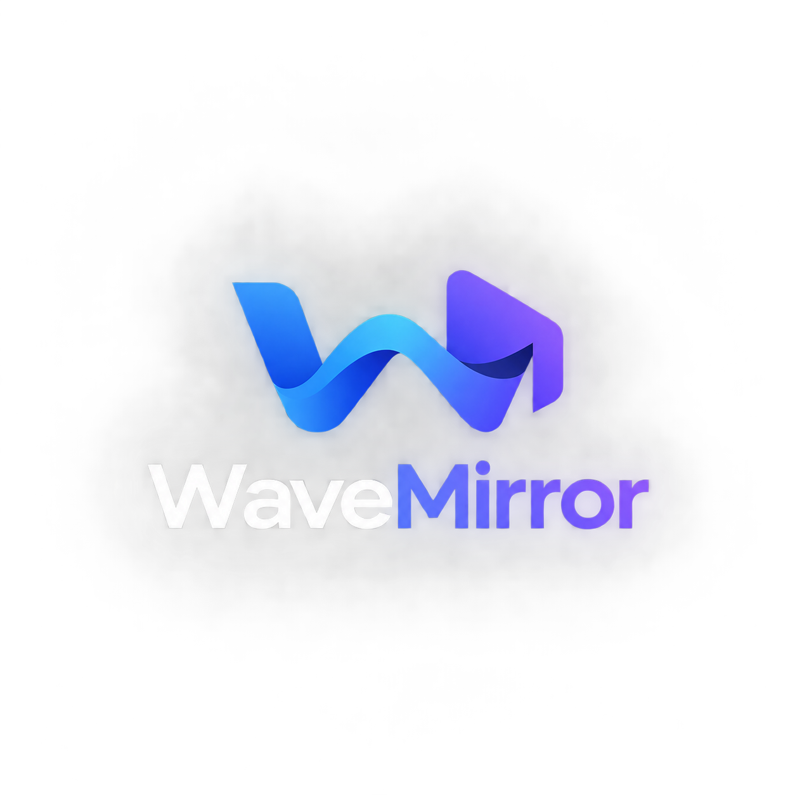

A direct link (.mp4 / .webm) is decoded locally and drawn straight onto the 3D screen. A file from this device works here but cannot be shared with party guests.

Walk the aisles with W A S D, drag to look around, and visit the café counter at the back.